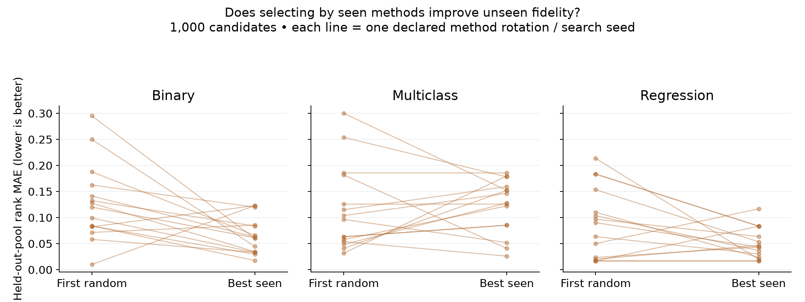
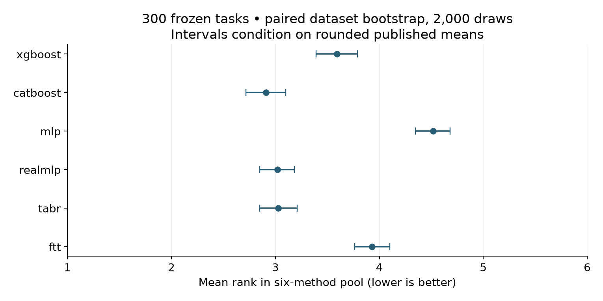

Year 2 · Quarter 2 · Lesson 058
Read a benchmark without inheriting its bias
Retrieve before reading
Why can withholding a model column protect an evaluation? Compare to withholding an outer-test target in lesson 057. Write a prediction before viewing the tiny-subset result.
A survey is a map; a benchmark is an experiment¶
In plain terms. A survey tells you what exists. A benchmark tells you what happened when someone ran an experiment. This lesson is about reading both without mistaking one for the other, and then building a small measuring tool of your own.
What you will build. The goal is a traceable evidence card: a way to turn a claim like "this model family is strong" into something you can trace back to a specific experiment. You will also implement and test a small benchmark whose task selection is not allowed to peek at the methods reserved for evaluation.
The concrete steps. You will parse actual published results. You will orient metrics so that larger and smaller numbers point the same way. You will rank a fixed pool of models. You will bootstrap paired differences between tasks. You will implement a random-search subset selector. No new predictive model is introduced here. The object we learn to build is an evaluation procedure — a recipe for measuring, not a new way to predict.
Retrieve before reading. Answer these from memory before continuing. What does an outer test set protect in lesson 057? Why can averaging folds as if they were independent datasets distort lesson 056's leaderboard? Can a method be implemented correctly and still fail to reproduce its paper? Write your answers now. In this lesson the protected information is sometimes an entire method column, not a single row's target.
Three roles a paper can play¶
A survey organizes concepts and references. A benchmark evaluates specified procedures on specified tasks. A meta-analysis aggregates evidence across many tasks or studies. One paper can play more than one of these roles at once. Borisov et al., arXiv v3, Sections III–IV and VII both proposes a taxonomy and runs its own five-dataset comparison.
The risk is reading the paper in only one mode. Treating it as only a literature map discards its experimental contribution. Treating its landscape discussion as if it were another independent experiment double-counts the evidence.
Why this matters for the mission. The relational mission needs credible single-table rivals to beat. A favorable neural result on a collection of tasks that was chosen by its outcome cannot establish that relational modeling adds useful information. The order of operations matters: first choose strong fitted procedures under the intended temporal and information constraints, then ask whether adding relationships improves them.
Read with two different questions in mind¶
A survey organizes a field: which problems methods address, which mechanisms they share and which assumptions separate them. A benchmark measures procedures under a concrete protocol. A survey can be an excellent conceptual map without independently rerunning every method it discusses. A large benchmark can measure many methods while leaving important conceptual distinctions unexplained.
When a paragraph says “recent methods improve tabular learning,” ask what role the sentence plays. Is it a taxonomy, a cited empirical claim, a synthesis across incomparable experiments or a new controlled comparison? These are different kinds of evidence. You should be able to annotate each important claim with its source and experimental denominator.
The TALENT table used here is a useful object because you can reconstruct part of the summary yourself. The parser turns a human-readable result table into a dataset-by-model matrix. That operation is not clerical: it fixes which tasks, model variants, metric directions and missing values enter your subsequent argument.
A model name alone is a poor taxonomy. Classify what happens to a row: numerical transformation, feature interaction, retrieval of labeled examples, aggregation of ensemble members or inference from a pretrained task learner. Then record what is learned on the current table and what was learned elsewhere. This prepares you to recognize that two differently named systems may share their central mechanism.
Build a question that the table can actually answer¶
“Which next baseline should I implement?” is a decision about your task constraints. The table can provide candidates and evidence about their behavior on its tasks. You still need to compare feature types, row counts, temporal structure, compute and target semantics with your intended application.
A useful output is a shortlist with a reason for each candidate: one strong tree procedure, one strong neural default, and a method whose mechanism targets a specific suspected weakness. The purpose of reading broadly is to design a sharper next experiment, not to accumulate model names.
Classify the operation, not the marketing name¶
In plain terms. A model's name is marketing. What matters is what the model actually does to your data. Group methods by their operation, not their label.
Three lenses from the taxonomy. Borisov's taxonomy separates methods into data transformations, specialized architectures, and regularization. Each answers a different question. A data transformation decides what representation reaches the model. An architecture decides how the model combines its inputs. Regularization decides what training behavior is encouraged. These lenses stay useful even when one modern method spans several categories at once.
Use surveys to find the original mechanisms, not to settle performance. The 2024 survey, Sections 2–3 gives a broader reading map; follow its references back to the original methods. Do not transfer a broad survey statement into a current performance claim without the experiment that would back it.
| Familiar procedure | Representation and interaction | What changes on the target task? | What one prediction needs |
|---|---|---|---|
| XGBoost / CatBoost | Successive tree partitions and additive corrections | Tree structures, leaves and selected settings | Features plus fitted trees |
| RealMLP | Numerical preprocessing, affine layers and nonlinearities; a full training recipe | Weights, target-task preprocessing statistics | Features and fitted parameters |
| FT-Transformer | Feature tokens exchange information through attention | Tokenizer, attention and head parameters | One row's feature tokens |
| TabR | A learned encoder retrieves and combines labeled examples | Encoder/predictor parameters and reference store | Query plus selected training examples |
| Pretrained PFN | Across-task training; context conditions a prediction | Context can change while weights remain frozen | Features, labeled context and checkpoint |
How to read the table. It revisits mechanisms from earlier lessons; it does not introduce or implement these models. Two rows that sound similar can be doing different things. A PFN's synthetic pretraining is not the same operation as learning feature representations from a target table's unlabeled rows. Likewise, TabR's retrieval learned on the target task is not automatically cross-task transfer. For each method, ask three questions: which parameters update, which labels are available, and whether the cost grows with the size of the context. These questions are what will distinguish the foundation-model lessons that begin at 061.
Worked example. Suppose a numerical encoding feeds an MLP, and the training loss adds a penalty. Calling this system "an MLP" names the backbone but hides two potentially decisive choices: the encoding and the penalty. An ablation that swaps the encoding and retunes the optimizer at the same time cannot isolate the effect of architecture alone. The lesson: a benchmark row should name the complete procedure being compared, not just its backbone.
Read the original experiment before its conclusion¶
In plain terms. A paper's headline conclusion sits on top of a specific experiment with specific settings. Read the settings first. The conclusion only means what those settings allow.
Borisov's five-task comparison¶
Borisov's Section VII compares five datasets: HELOC, Adult, HIGGS, Covertype, and California Housing. The protocol is stated: 100 Optuna iterations, five-fold evaluation, numerical normalization, ordinal categorical encoding, and model-specific handling. The table reports accuracy or AUC for classification and MSE for regression. The authors' strongest neural result appears on the large HIGGS case.
Scope check. Five tasks are not an estimate over every future business table. The authors' own discussion explicitly recognizes that results are sensitive to the dataset and the encoding. We do not rerun that benchmark here.
TALENT's protocol is a different experiment¶
TALENT v3, Section 4.2 describes a different procedure. It uses random 64/16/20 train/validation/test partitions, tuning and early stopping on the validation split, 100 Optuna trials, and then 15 training seeds with the selected hyperparameters. Accuracy is the principal classification criterion; regression uses RMSE. These are settings the paper reports; they cannot be recovered from a single rounded result cell.
Scope check. An equal trial count does not imply equal wall-clock time or equally effective search spaces. TALENT's task curation aims at standard same-distribution prediction and removes timestamps as attributes — a deliberate scope choice that does not answer lesson 055's future-period deployment question. Related source variants are sometimes retained, so the benchmark's size is not the same as the number of independent domains. A broad random-split benchmark and a narrower deployment-aligned temporal experiment provide different evidence.
Audit the paper against itself. Section 4 reports 120 binary, 80 multiclass, and 100 regression tasks. The Figure 3 caption reverses the binary and regression counts. The local tables we checked have 120/80/100 rows. When a paper contradicts itself, resolve it against the exact artifact you are analyzing, and keep a note rather than silently combining versions.
Reconstruct the denominator¶
In plain terms. Before you trust any average, know exactly what it is averaging over. The "denominator" is the set of tasks and models that actually went into the summary. Reconstruct it yourself so no silent typo or missing cell changes the answer.
Pin the source bytes¶
The lab uses three checksum-pinned Markdown tables at revision 1b973adffa4203c3f62c4949957b1ba3efbe60d3. The source record names each URL and its SHA256. Raw training arrays are not downloaded in this audit. A matching Markdown hash proves the bytes of the table, not the identity of the underlying datasets.
Scope check. The release note points to a corrected benchmark and mentions duplicate removal and task-type corrections. A repository revision that contains a notice about replacement data does not certify that every older table was regenerated with those corrections. We therefore call this a frozen historical release, not today's leaderboard.
One cell holds two numbers¶
A cell like 0.7645+0.0110 contains a mean and a reported dispersion, not individual observations. The new parser keeps the two numbers in separate aligned frames. It recognizes explicit missing markers, including nan+nan. It rejects malformed non-missing values and repeated row identifiers. It never manufactures seeds. The Pima/XGBoost cell above is a real trace: its parsed mean enters the ranking, while 0.0110 stays in the dispersion frame and is never treated as a standard error.
Two separate rank pools¶
The main comparison fixes six arms: XGBoost, CatBoost, MLP, RealMLP, TabR, and FT-Transformer. All six have entries on all 300 rows. The separate tiny-benchmark track uses the paper's named 13-method family roster for classification and 12 for regression, which omits TabPFN. These are separate rank pools and must not be mixed. LR is an explicit alias for the release's LogReg/LinearRegression. Original dataset labels stay intact, with a task prefix added in the audit output.
Missing values are information about the experiment¶
Suppose a table contains five datasets and three models. Model C has results on only four datasets. Averaging each column over its available rows compares C on a different population from A and B. If the missing task is particularly hard for C, the apparent ranking can be optimistic.
There are several defensible policies: restrict to a complete common panel, report model-specific coverage alongside separate averages, or assign failures a prespecified treatment appropriate to the decision. None should be chosen after seeing which policy produces the preferred winner. The local parser preserves missingness so the aggregation layer can apply an explicit policy.
Never replace a dash with zero. For a loss metric, zero can mean perfect prediction; for an accuracy metric, it can mean complete failure. Either substitution invents a measurement. Likewise, the string “mean ± SD” contains two different statistics. Extracting the first numeric token may recover a mean, but it does not turn the reported SD into a standard error or reconstruct individual seeds.
Dataset identifiers need normalization without accidental merging. Two tasks with similar names may have different targets or preprocessing. Preserve the original row label and a stable canonical ID, and reject duplicate IDs rather than silently overwriting one row in a dictionary.
Before ranking, assert the matrix shape, metric direction and finite coverage. Manually compare a few parsed rows with the pinned source. A parser that runs without exception can still transpose model columns, misread a minus sign or remove a task. The artifact should make these mistakes detectable.
Turn incomparable units into comparable positions¶
In plain terms. You cannot average an accuracy against a mean-squared error — the units are unrelated. Ranks fix this: on each task you record who came first, second, third, and then average those positions. Positions are comparable even when the raw numbers are not.
The ranking recipe¶
Let S[d,m] be the published mean for dataset d and method m. First make every number lower-is-better; call this E[d,m]. Use −S for accuracy (so a higher accuracy becomes a smaller number) and S for RMSE (already lower-is-better). Then rank each row within the declared method pool, giving tied entries the average of the positions they occupy. Write that position as R[d,m]. The dataset-balanced mean rank is r[m] = (1/D) Σd R[d,m], where D counts datasets. Never pool raw accuracy and RMSE into one average.
Worked example. Take three methods A, B, C measured as errors on two datasets: [.10,.11,.90] and [100,10,11]. On the first dataset the row ranks are [1,2,3]; on the second they are [3,1,2]. Averaging the two gives [2,1.5,2.5], so B leads this summary. Notice what ranking bought and what it cost. The second task's large units can no longer dominate the average. But a tiny win and a huge win now count equally as "first place." Before choosing a system, inspect the actual effect sizes on your deployment task.
What ranks quietly assume¶
If three rounded values occupy positions 2, 3, and 4, each receives rank 3. This reports what the released precision supports; it does not establish exact ties in the underlying population. Removing a competitor can change the remaining mean ranks even though no prediction changed.
Scope check. Ranks also depend on how tasks are weighted. The 120/80/100 collection weights the task types 40% / 26.7% / 33.3% by their counts. Giving each task type an equal one-third weight is a different estimand — a different quantity you intend to summarize. Neither is wrong, but they answer different questions.

Why ranks help, and what they erase¶
Consider two regression datasets. On the first, RMSEs for A and B are 10 and 11. On the second, they are 0.20 and 0.10. Averaging raw RMSE gives 5.10 for A and 5.55 for B, apparently favoring A, but the units and scales of the targets may be unrelated. A unit conversion on the first target can change that average without changing either model's useful ordering.
Within-dataset ranks give A positions 1 and 2, and B positions 2 and 1. Their mean ranks tie at 1.5. This avoids direct averaging of incompatible units, but it also discards the magnitude of each win. A tenfold improvement and a tiny improvement both count as first place.
Use ranks to summarize relative positions, then return to task-level scores to understand practical differences. If a summary changes substantially when one task is removed, inspect that task and the aggregation rule. The sensitivity may be a property of the small task population rather than an error.
Tied reported means require an honest tie policy. Rounded values can be equal even if their underlying unrounded values differ. The parsed table supports rankings at its published precision. It does not justify inventing extra decimal places from the accompanying standard deviations.
Outcome selection changes the question¶
Imagine retaining only datasets where A beats B. A's mean rank on this subset must look favorable by construction. This does not independently confirm that A is broadly strong; the selection rule already used the outcome being summarized. Selecting tasks by a deployment-relevant property fixed before model evaluation is a different operation.
The lesson's selected-subset view is a diagnostic of this mechanism. Keep the full-panel result beside it and label the selection rule. A dramatic ranking change is evidence that the denominator matters, not a reason to adopt the more flattering panel.
The average contains a choice about whose task matters¶
Giving each dataset equal weight estimates an average over tasks. Giving each row equal weight estimates an average dominated by larger datasets. These are different objectives. If one task has 100 rows and another has 100,000, row weighting makes the larger task contribute a thousand times more, even if the two deployments are equally important to you.
Task weighting can also hide relatedness. Ten targets derived from one source system may contribute ten votes while an unrelated domain contributes one. Equal weights do not automatically imply a representative task population. Describe the collection and consider whether a source-level grouping is needed for the question.
Suppose A wins nine small datasets by a little and loses one large dataset by a lot. Equal task ranks can favor A; row-weighted loss can favor B. Neither summary is mathematically wrong. The decision depends on whether you are choosing a default for many equally valued tasks or optimizing total error over a specific workload.
For your next experiment, write the weighting rule before measuring models. Then include a sensitivity view under one plausible alternative if it would change the recommendation. This makes the value judgment visible instead of hiding it inside the word “average.”
Make selection bias visible¶
In plain terms. If you pick the tasks after seeing which model wins them, you can make almost any model look great. This section shows that trick in the open so you can recognize it — and separates it from the legitimate reasons a paper builds a small task set.
A deliberate demonstration. The historical lab intentionally selects the 45 rows with the largest XGBoost-over-MLP rank advantage. On that hand-picked subset, XGBoost's mean rank shifts from 3.593 to 1.300. This is an outcome-selection demonstration, not TALENT's Tiny Benchmark 1 or 2. The old result and its original operator hash remain unchanged. Tie handling in that archived selection follows its original NumPy sort; the new experiment below defines its own first-candidate tie rule.
TALENT's two tiny benchmarks have different goals¶
TALENT Section 8 pursues two distinct goals, and they are easy to confuse.
- Tiny Benchmark 1 is a diagnostic collection. It deliberately spreads tree-friendly, DNN-friendly, and near-tie examples across size groups, with feature-type refinements. Its 15 binary / 12 multiclass / 18 regression tasks are chosen for that diagnostic spread, not by picking the 45 most tree-friendly rows. Running an encoding intervention on it asks where the encoding helps under those chosen conditions.
- Tiny Benchmark 2 instead seeks a subset whose average method ranks resemble the full collection.
These two objectives can select different tasks and support different claims. Keep them apart.
Reading check. Suppose a new encoding helps on tree-friendly tasks but hurts on DNN-friendly ones. That identifies an interaction worth studying. It does not make the selection invalid, and it does not prove the encoding should be applied to every future table. Prespecify the deployment population, then verify the mechanism in a controlled experiment.
Build a tiny benchmark that can fail honestly¶
In plain terms. The paper's key contribution is a way to pick a small set of tasks whose model rankings look like the full set's. This section rebuilds that selector — and then measures how it can succeed on the methods it saw while failing on methods it never saw.
The selection objective¶
Let A be the methods allowed to guide selection, and let B be the full task collection. For each candidate subset U of k tasks, compute the loss
L(U; A) = mean over m in A of |mean over d in U R_A[d,m] − mean over d in B R_A[d,m]|.
Read this piece by piece. R_A ranks methods within A only. For each method m, you compare its mean rank on the subset U against its mean rank on the whole collection B, and take the absolute difference. The absolute value stops positive and negative discrepancies from cancelling. Averaging ranks (rather than summing them) keeps a 15-task subset comparable to a 100-task collection.
What "random selection" means here. Random search proposes unique task subsets, computes each one's loss, and keeps the first subset that achieves the smallest loss. The candidate count is an optimization budget. So "random selection" in this setting means selecting the best among many random proposals, not using one unselected random subset.
Scope check. The source is inconsistent in its own notation. Equation 5 displays sums while its prose discusses averages. The detailed selection descriptions and the Table 7 caption use MAE, while an applications paragraph says MSE. We implement the explicit mean-rank MAE objective above; we do not claim literal parity with the equation or Table 7. The upstream visualization script also mean-imputes missing ranks, whereas this lab uses a complete panel and exposes missingness. No imputation is needed for the chosen pools.
Worked example. Take six synthetic tasks with A/B ranks [1,2], [1,2], [2,1], [2,1], [1,2], [2,1], so the full-collection mean is [1.5,1.5]. Candidate rows [0,1] give [1,2], hence MAE .5. Candidate rows [0,2] give [1.5,1.5], hence MAE 0. When the proposal sequence is nested, more proposals cannot worsen the best seen-method objective. But nothing in that statement guarantees improvement on the methods selection never saw.

The information boundary¶
The order of two operations is the whole game. The notebook first reserves the held-out method columns, and only then computes ranks among the remaining methods. If instead you ranked all methods first and hid some columns afterward, the hidden methods' scores would already have influenced the visible positions — a leak. So the selector accepts only a seen-method rank matrix. After it freezes the task IDs, the evaluator reads the held-out columns and ranks them within their own pool. Changing a held-out score must not change which task IDs were selected; a CHECK tests that boundary directly.
The real-table track and its honest limits¶
The new real-table track uses five declared method rotations, three search seeds (58–60), and separate complete task-type subsets: 17/116 binary, 9/60 multiclass, 15/100 regression (15% rounded to the nearest integer). The 13-method classifier panel loses four binary and twenty multiclass tasks because the historical TabPFN column is missing; the 12-method regression panel is complete. This yields 276 eligible tasks and 41 selected tasks, not the paper's 300 and 45. It tests 1,000 proposals and then 10,000, the latter matching the paper's random-search count. Within each task type and fold, the baseline is the first identical random proposal.
Scope check. Missingness is a substantive change in the target population, so the result artifact lists every exclusion. The original paper's exact method splits, corrected table version, original tiny membership, and selector implementation are not recovered. The seen and unseen rank pools also differ in scale, so compare selected-versus-random within each group; do not treat their raw MAEs as directly interchangeable.

What the run measured¶
Measured outcome. With 1,000 candidates, the selected subset has worse held-out fidelity than the first random proposal in 15 of 45 declared cases; 26 improve and four tie within 1e−12. With 10,000 candidates, 20 worsen, 24 improve, and one ties. Increasing the budget from 1,000 to 10,000 improves the seen objective in aggregate but worsens the held-out objective in 23 cases, improves it in 13, and leaves nine unchanged. These are overlapping method rotations and search seeds, not independent success-rate estimates. The result exposes the intended failure mode: a proxy that is optimized more accurately need not be a more transferable benchmark.
The per-type averages. At 1,000 proposals, the mean held-out MAE change (selected minus first random) is −0.0618 for binary, +0.0065 for multiclass, and −0.0387 for regression. The small positive multiclass average is a failed improvement — its held-out fidelity got worse even while its seen-method objective improved. Compare these changes within a task type and held-out pool, because differences between task types also reflect different rank scales and available-task populations. Every case and selected task ID is available in the fresh analysis, with the 10,000-candidate comparison saved separately.
What uncertainty can you recover?¶
In plain terms. The published table gives you one number per model per task. You can measure how much your ranking wobbles when you resample which tasks are in the collection. You cannot recover the run-to-run noise that the table never reported.
The dataset bootstrap¶
A dataset bootstrap samples D dataset indices with replacement and uses that same index list for every model column. Each draw recomputes a mean rank. The 2.5% and 97.5% quantiles of those means form a percentile interval — not a t interval. Related tasks and retained source variants limit how far you can treat the datasets as exchangeable.
Scope check. This result measures sensitivity to this historical task collection, conditional on its published means. It cannot restore training-seed uncertainty, because the source table never reported the individual seeds.
Pair before you compare¶
For a genuine pairwise claim, compute the paired per-task difference first. Here G[d] = R[d,CatBoost] − R[d,RealMLP], where a negative value means CatBoost has the better rank. Bootstrap G directly. Checking whether two separate (marginal) intervals happen to overlap is a different, weaker calculation. An interval that crosses zero does not prove the two methods are equivalent, and a narrow interval over this collection does not cover future temporal shift.

Measured outcome. CatBoost has the smallest six-method mean rank, 2.908, followed by RealMLP 3.022 and TabR 3.028. The paired CatBoost-minus-RealMLP rank gap is −0.113, with a dataset percentile interval of [−0.408, 0.192]. The CatBoost-minus-TabR gap is −0.120, with interval [−0.450, 0.197]. Negative favors CatBoost. Both intervals cross zero, so this audit does not resolve that ordering under its resampling assumptions; it also does not establish equivalence. All three remain reasonable candidates for a deployment-aligned comparison. The small rank differences cannot justify discarding an otherwise feasible baseline.
Scope check. The tiny-benchmark comparisons reuse tasks and overlapping method pools. The fifteen fold/seed records per task type are sensitivity cases, not fifteen independent new benchmarks. Report every paired change rather than a p-value that pretends the rotations are independent samples. Keep three sources of randomness distinct — dataset-bootstrap randomness, subset-search randomness, and training randomness — because only the first two are recomputed here.
Published mean and SD do not recover paired runs¶
Two models may each have mean loss 0.4 and SD 0.02 across seeds. That does not tell you the SD of their paired difference. If their errors move together across seeds, the difference can be stable; if they move in opposite directions, it can vary much more. The covariance is missing from the marginal summaries.
The variance identity is Var(A−B)=Var(A)+Var(B)−2Cov(A,B). Without the paired observations or an additional assumption, you cannot recover the covariance. Do not simulate arbitrary seed values from the reported means and SDs and then treat them as observed evidence.
A dataset bootstrap on the parsed mean-score matrix answers a different question. It resamples observed dataset rows jointly across model columns and measures how the aggregate changes with the task mix. It conditions on the reported means as the available observations. It does not restore training-seed uncertainty that the source table did not provide.
With a small or highly related task collection, bootstrap intervals can underrepresent uncertainty about genuinely new domains. State the resampling unit and the population you are willing to generalize to. A confidence interval is meaningful only together with the experiment and assumptions that generated it.
For the exit artifact, retain the pinned source identity, parser checks, complete-panel task IDs, selection rule and bootstrap seed. Then write one conclusion the reconstructed table supports and one it cannot support. This is the bridge from reading a survey to designing a defensible experiment.
From meta-features to a discriminating experiment¶
In plain terms. Noticing that "big datasets tend to favor model X" is a correlation across many different tasks. It can suggest an experiment, but it cannot prove why X wins. To learn why, you change one thing at a time on a fixed task.
What a meta-feature is. A meta-feature is a task-level summary, such as the number of rows or a distribution statistic. TALENT Sections 6–7 examine learning-curve prediction and these meta-features. A relationship between a meta-feature and model rank is observational: preprocessing, source domain, sample size, and other properties can all move together. Feature importance in a curve predictor is not a causal explanation of which architecture wins. The lab does not reproduce those sections' predictive models, feature selection, or reported associations.
Two kinds of comparison. Connect this to lesson 051. A controlled rotation or uninformative-feature intervention holds one task and protocol fixed while changing a single specified property. A cross-dataset correlation compares different tasks that may differ in many ways at once. Use the correlation to propose an intervention; use the controlled change to test a mechanism. Neither alone establishes transfer to a new relational deployment.
Worked example. Suppose a method seems weak on tables with uneven feature distributions. First, compare alternative preprocessing on the same rows and the same split, with matched selection budgets. Next, separately verify that a temporal holdout keeps that advantage. Finally, add relational information while holding the strong single-table procedure fixed. That chain builds evidence for the mission, instead of reading a taxonomy label as if it were an experimental result.
Exit: choose the next experiment¶
In plain terms. The exit asks you to turn everything above into one defensible recommendation for the next lesson, and to stay honest about what your run did and did not show.
What to submit. Turn in the five implemented functions, the coverage and source audit, the complete and task-specific ranks, the paired percentile intervals, all tiny-subset method holdouts, and the saved EXIT JSON. Add a mechanism map for four candidate baseline procedures and one limitation per evidence source. Before you run the required 10,000-candidate track, write down your prediction: must a larger budget improve unseen-method fidelity?
What your recommendation must contain. Your lesson 060 recommendation must name a strong tree procedure, a strong neural procedure, the deployment split, and the compute constraint — plus one result that would change the shortlist. Explain one case where optimizing the tiny benchmark improved seen-method fidelity but failed on unseen methods; if the observed run did not show such a case, report that honestly. Ask the tutor about any CHECK or inference you cannot defend, and revisit the opening questions before you reread tomorrow.
Run the companion lab
Five live TODOs: parse mean/SD tables, orient and rank, bootstrap paired tasks, select a tiny subset, and enforce a held-out-method boundary. Complete the 10,000-candidate CPU track and submit your EXIT artifact.